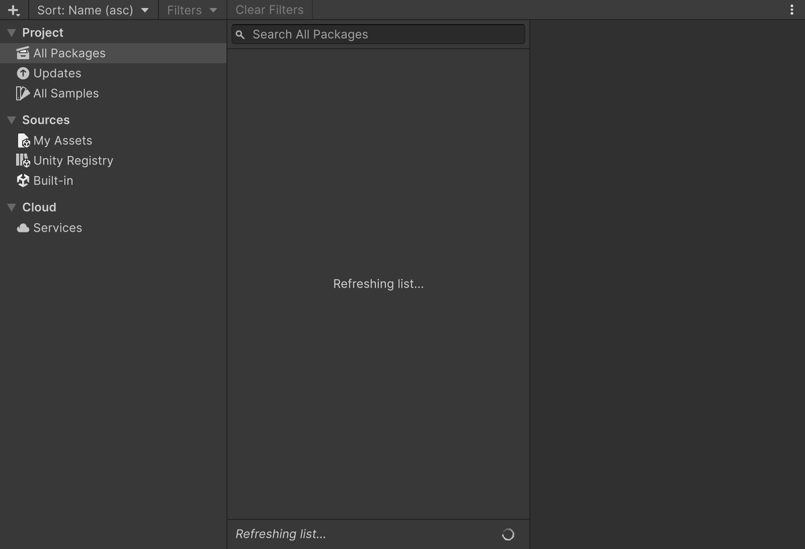
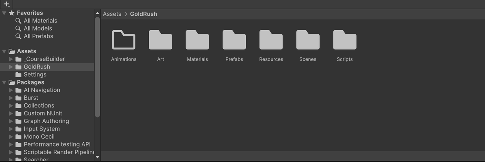
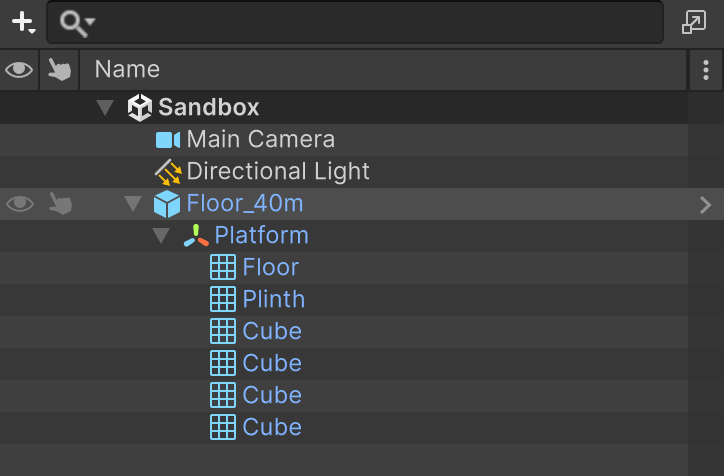
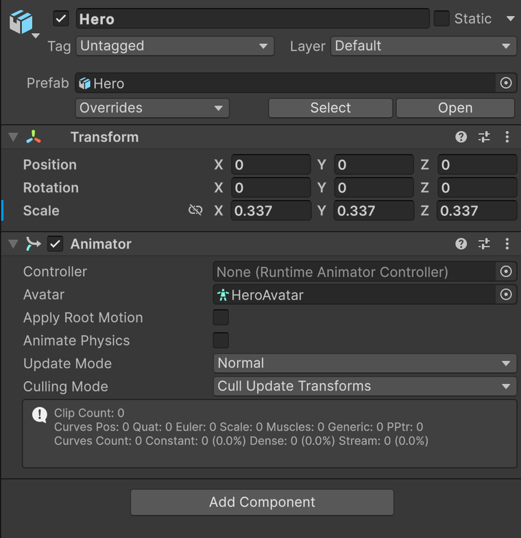
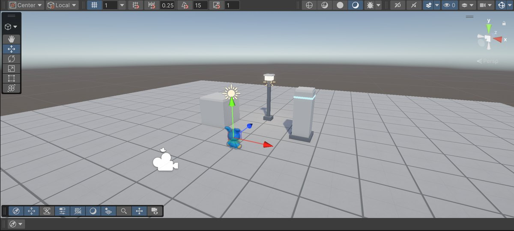
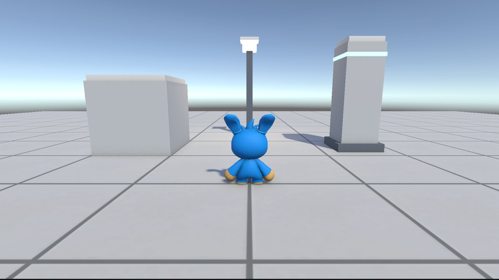

GOLD RUSH · Phase 0
Create the project
You make a new, empty Unity project called GoldRush. You add the packages the game needs and set the input mode. Then you import the starter package: the art (characters, sounds, icons, fonts, UI shapes), all materials and the ready-made level prefabs. At the end the hero model and a few kit pieces stand in a test scene.
1What you need
- Unity Hub and Unity 6000.6.10f1 or newer (Unity 6.6). The course was made with 6000.6.10f1.
- The starter package
GoldRush_Phase00_Project.unitypackage.
The course order: first you build the main menu (phases 1–2), then the level, the player and the gameplay (phases 3–8), then the game UI and the final polish (phases 9–10).
2Create the project
- Open Unity Hub.
- Click New project.
- At the top, pick the editor version 6000.6.10f1 (or newer).
- Pick the template Universal 3D. If it shows a download button, click it first.
- Project name:
GoldRush. - Choose a location you can find again (for example your Desktop).
- Untick Connect to Unity Cloud and Use Unity Version Control. You do not need them.
- Click Create project. Wait. The first start takes a few minutes.
Universal 3D means the project uses URP (Universal Render Pipeline). URP is the modern Unity renderer. It works on PC and on phones, and it gives us glow (bloom) and soft shadows.
3Clean up the template
- In the Project window, open the
Assetsfolder. - Right-click the
TutorialInfofolder → Delete → Delete. - Right-click the
Readmefile → Delete → Delete.
Settings folder. It holds the URP settings (PC_RPAsset, Mobile_RPAsset). Without it, everything turns pink.4Check the packages
A package is an extra part of Unity that you add to a project. The game needs three:
| Package | Version in the real game | What it does |
|---|---|---|
| Universal RP | 17.6.0 | The renderer (already in the template). |
| Input System | 1.20.1 | Keyboard, mouse, touch and UI input (already in the template). |
| AI Navigation | 2.0.16 | NavMesh: monsters use it to find their way (phase 7). You install it in the next step. |
- Open Window → Package Management → Package Manager.
- On the left, click In Project.
- Check that Universal RP and Input System are in the list. A newer version number is fine.
5Install AI Navigation
- In the Package Manager, on the left, click Unity Registry.
- In the search box, type
AI Navigation. - Click AI Navigation in the list.
- Click Install. Wait until it is done.
- Close the Package Manager.

6Set Active Input Handling to Both
The game scripts read the keyboard and mouse with Unity's classic Input class (for example Input.GetKey(KeyCode.W)). The UI buttons use the new Input System. So the project must allow both.
- Open Edit → Project Settings…
- On the left, click Player.
- Open Other Settings. Scroll down to Configuration.
- Set Active Input Handling to Both.
- Unity asks to restart. Click Apply (or Yes). Unity closes and opens again.
7Import the starter package
- Open Assets → Import Package → Custom Package…
- Choose
GoldRush_Phase00_Project.unitypackage. Click Open. - Keep everything ticked. Click Import. Wait until the import bar is gone.
Everything is now in Assets/GoldRush:
| Folder | What is inside |
|---|---|
Art/Characters | The hero and the three monsters (Hero.fbx, Slime.fbx, Ghost.fbx, MushroomKing.fbx, by Quaternius, CC0), with their animations, and the licences. |
Art/Audio | Sound effects and music (.wav): click, coin, whoosh, win, music, … |
Art/Textures | The floor grid texture and the ITSTEP badge. |
Resources/UISprites | The UI shapes: pill, rr (rounded rectangle), circle, their thin outlines (pillo, rro2, ring2), soft glow and fades. You build the menu with them in phase 1. |
Resources/Icons, Resources/Fonts | The UI icons (Material Icons, already set up as sprites) and the Poppins font. Resources is a special folder: scripts load files from it by name while the game runs. |
Materials | All materials, ready to use: M_Floor, M_Block, M_Red, M_GlowCyan, M_Gold, … and the base materials GR_Lit, GR_SunsetSky, … |
Prefabs/Level | The level kit: floor, blocks, walls, pillar, lamp post, barrier, terminal, … You use it for the menu stage (phase 1) and the levels (phase 3). |
Prefabs/Gameplay | The 3D models of the coin, the exit gate and the power-ups. They get their scripts in phases 5, 6 and 8. |
Resources. The scripts find them by name.8Add the other folders
Make the folders for the files you create yourself. Right-click a folder → Create → Folder. When you are done, the tree looks like this:
Assets/GoldRush/
Animations/ ← new: Animator Controllers (phase 1, 4 and 7)
Art/ (from the package)
Materials/ (from the package)
Prefabs/
Gameplay/ (from the package)
Level/ (from the package)
UI/ ← new: your glass UI pieces (phase 1 and 2)
Resources/ (from the package)
Scenes/ ← new: the menu and the levels
Scripts/ ← new
Audio/
Core/
Gameplay/
Level/
UI/
World/
9Make a test scene
A scene is one level or screen of the game. We use a small test scene, Sandbox, to look at the starter package.
- Open File → New Scene. Pick Basic (URP). Click Create.
- File → Save As… → folder
Assets/GoldRush/Scenes→ nameSandbox→ Save. - Drag
Prefabs/Level/Floor_40mfrom the Project window into the Hierarchy. - In the Inspector, set its Position to
0, 0, 0.

Assets/Scenes/SampleScene. You do not need it. You can delete the Assets/Scenes folder.10Add the hero and some kit pieces
- Drag
Art/Characters/Hero/Hero.fbxinto the Hierarchy. - Set its Position to
0, 0, 0and its Scale to0.337, 0.337, 0.337. (The model file is about 4 m tall. At 0.337 the hero is 1.35 m, the game size.) - Drag in three kit pieces from
Prefabs/Leveland set their Position:Prefab Position Block_2x2x2-3, 0, 3Pillar3, 0, 3LampPost0, 0, 5 - Select Main Camera. Set Position
0, 1.5, -4and Rotation10, 0, 0. - Save the scene (Ctrl+S / Cmd+S).
Every kit piece has its pivot at the bottom: at Y = 0 it stands exactly on the floor. The hero looks north (+Z), so the camera sees his back.


11▶ Press Play
- Click the ▶ Play button at the top.
- Look at the Game view.
- Click ▶ again to stop.

You should see:
- The hero model and three kit pieces in the Game view, on the grid floor. The hero stands in a T-pose or rest pose: that is fine for now.
- The Project window has the full
Assets/GoldRushfolder tree. - No red errors in the Console (Window → General → Console).
12Common problems
| Problem | Fix |
|---|---|
| Everything is pink. | The URP settings are missing. Do not delete the Settings folder. Check Edit → Project Settings → Graphics: Default Render Pipeline must be a URP asset (for example PC_RPAsset). If you made a 3D (Built-In) project by mistake, make a new project with Universal 3D. |
| The template Universal 3D is not in the list. | Scroll down in Unity Hub, or click the download icon next to it. Check that you picked Unity 6000.6.10f1 or newer. |
| I cannot find Package Management in the Window menu. | In some Unity 6 versions it is Window → Package Manager directly. |
| Active Input Handling: I chose Both, but nothing happened. | Unity must restart. Close Unity yourself and open the project again from Unity Hub. |
| Red errors right after the import. | Check that AI Navigation is installed (step 5), then import the package again. |
| The hero is huge or tiny. | Scale must be 0.337 on all three axes (step 10). |
| A kit piece floats or sinks into the floor. | Set its Position Y to 0. The pivot is at the bottom. |
More fixes are on the Troubleshooting page. New words are in the Glossary.
Checkpoint package: GoldRush_Phase00_Project.unitypackage (the starter package plus your Sandbox scene)
Next: in Phase 1 you build the main menu: a 3D stage with the hero and the title screen.